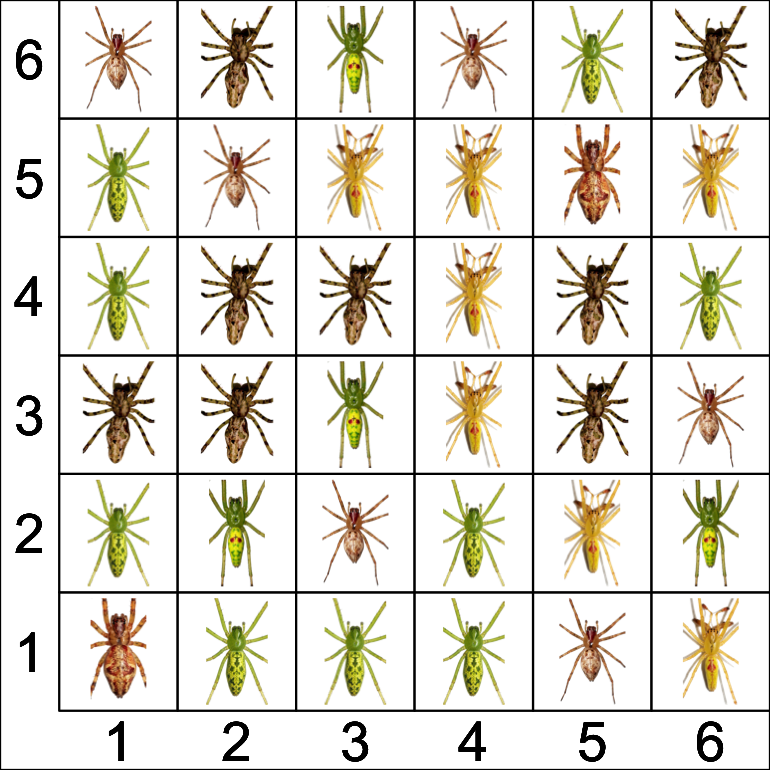
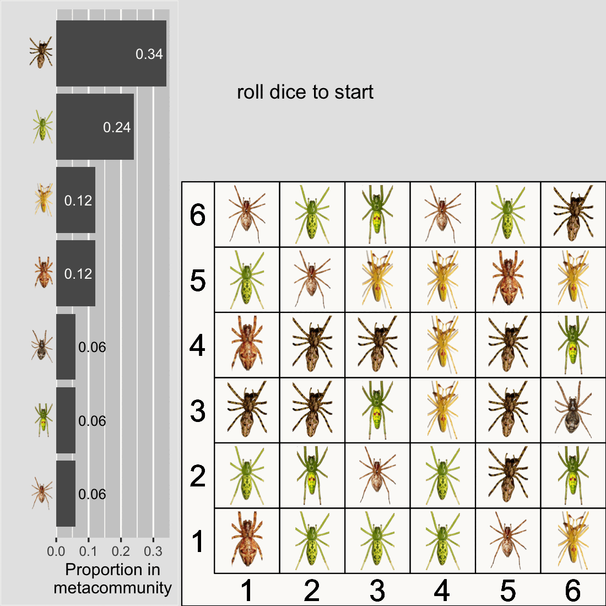
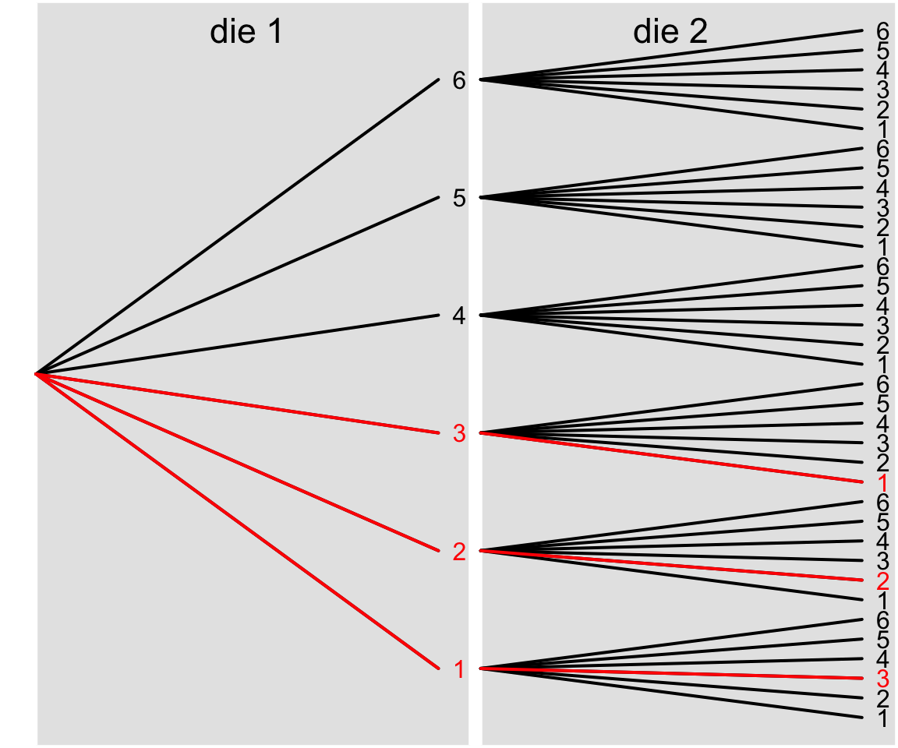
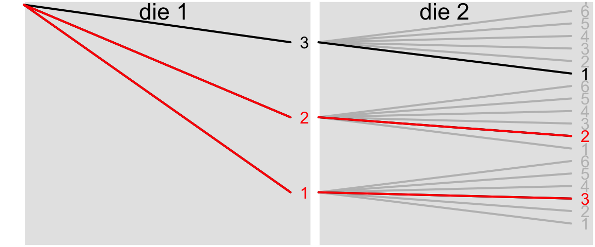
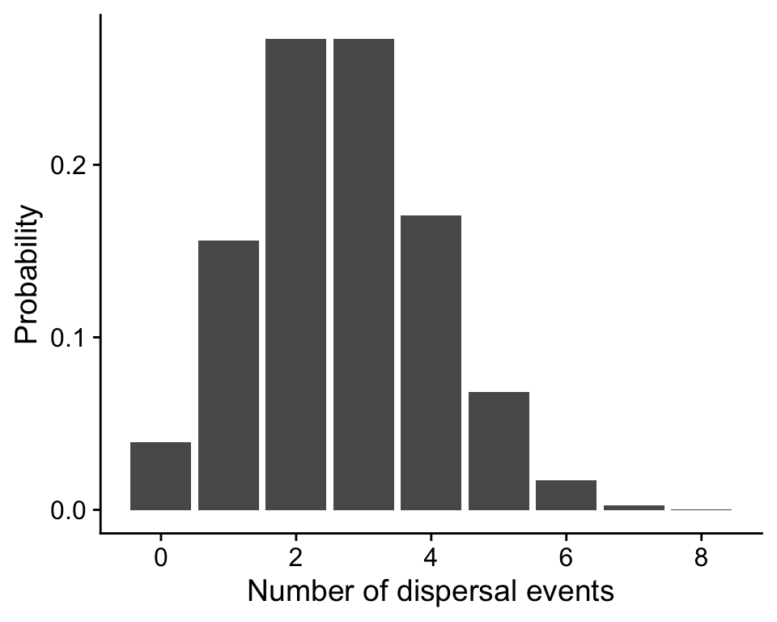
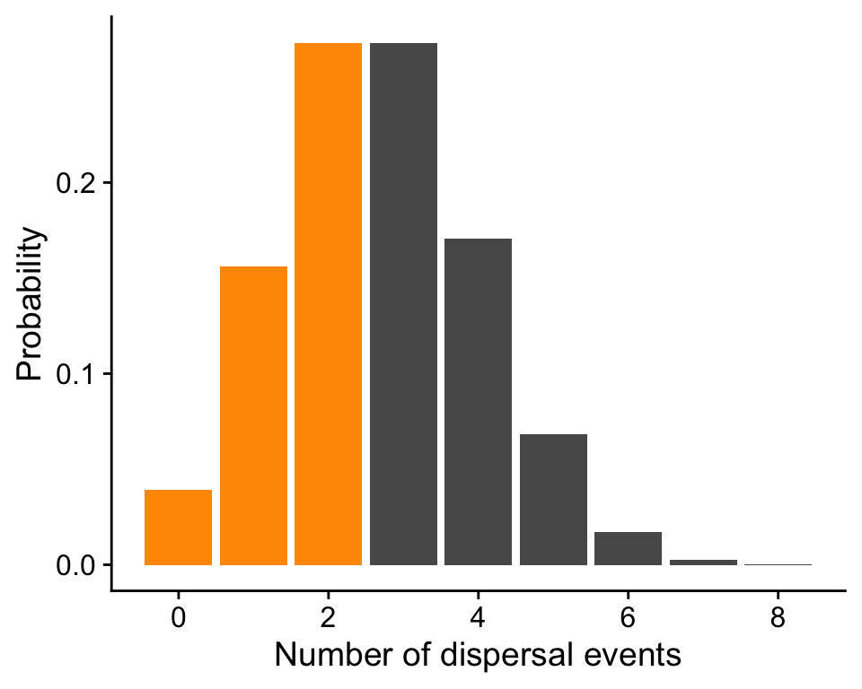
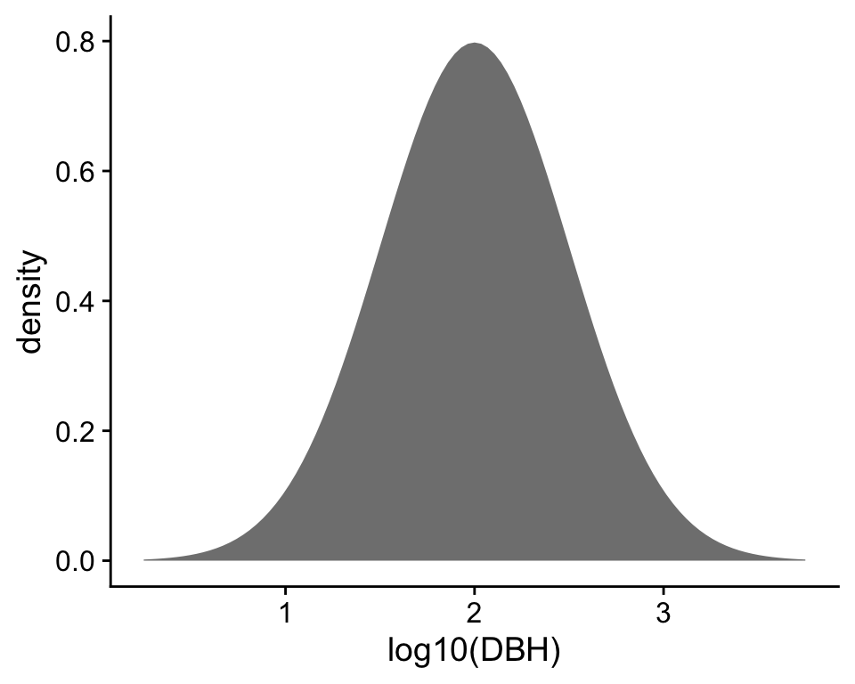
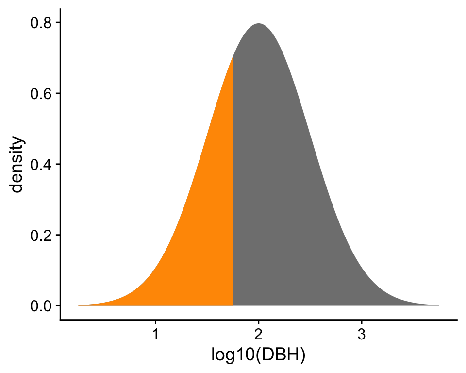
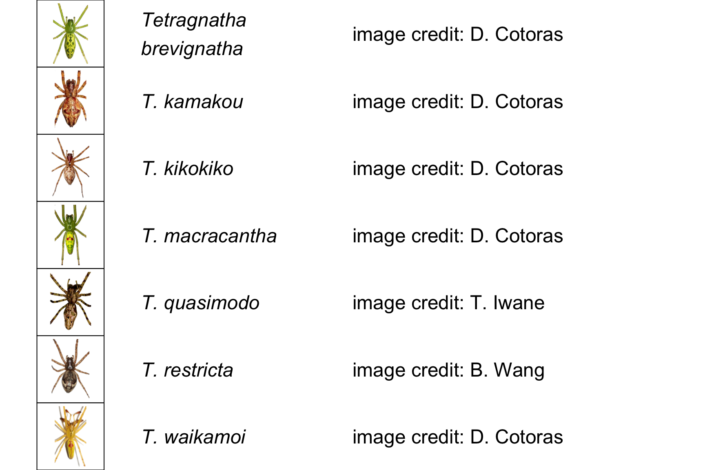

7 Introduction to probability
Probability is a pervasive part of our world. If the world was not probabilistic in some way, there would be no surprises, uncertainty, or variability (though some argue that chaos could give us a close second). Probability is the spice of life you might say. In this course we will assume you have had previous exposure to introductory probability in a previous math or statistics course. We will just refresh on the basics needed for the material ahead of us.
To start we’ll play a probabilistic eco-evolutionary game.
7.1 Simulating ecology and evolution with dice
How does biodiversity come to be? Many researchers have been motivated by that question. One unexpected answer was: what if it’s all just random? That is the answer codified in the Unified Neutral Theory of Biodiversity (UNTB; Hubbell (2001)). This theory, in an only slightly simplified form, puts forward the following mechanisms: suppose we have \(J\) individuals (e.g. 36) living in a local community, and suppose we have an effectively infinite metacommunity1 with a never ending source of propagules that could potential disperse into the local community, then in every time step:
- with equal probability, pick a random individual in the local community to die
- replace that individual with either:
- dispersal from the metacommunity with probability \(m\), …or…
- local birth with probability \(1 - m\) (the individual chosen to die can still give birth)
- choose the replacement individual (from either local community or metacommunity) with equal probability across all possible individuals
- the replacement individual undergoes speciation with probability \(\nu\)
As simple as this theory is, it can produce shockingly realistic predictions for species richness and the distribution of abundances across species (Hubbell 2001; Rosindell et al. 2011). Here is an example of a simulated local community inspired by the real life composition of Tetragnatha spiders on Haleakalā (Gillespie 2004).
The grid is for display and accounting purposes only, it does not represent actual spatial proximity of organisms.
Now here is our challenge: let’s run the UNTB on this 6x6 grid using only two 6-sided dice and an assumption about the proportion of species in the metacommunity. Let’s also set \(m = \frac{1}{3}\) and \(\nu = \frac{1}{36}\). Think of it like a game. How can we play this game? Here are the rules:
- Roll both dice, they give us the coordinates of the spider that dies
- Roll again for local birth or dispersal from the metacommunity:
- if the first die is 2 or less, that’s dispersal with probability \(\frac{1}{3}\)
- choose an immigrant from the metacommunity based on their proportion: think of having different proportions of spiders in a bag
- reach in a grab a spider (don’t worry, they don’t bite): you will typically grab one with a higher proportion
- if the first die is greater than 2, that’s birth
- roll the dice again
- now they give us the coordinates of the parent who will give birth
- if the first die is 2 or less, that’s dispersal with probability \(\frac{1}{3}\)
- Replace the dead individual with the new one from either birth or immigration
- Roll the dice to check for speciation: if you get (1, 1) that corresponds to a probability of \(\frac{1}{36}\)
Here are 8 rounds of this game on loop:

What did you notice? Perhaps:
- This is a boring game (a matter of personal opinion)
- Most of the time death is replaced by local birth—makes sense, local birth has a higher probability
- Speciation never happened! Also makes sense, it’s even more unlikely
Here are some questions:
- But wait, why does dispersal happen less than local birth and speciation even less?
- Why does rolling two dice to pick who dies or who gives birth result in equal probability across the 6x6 grid?
- Why does rolling 2 or less on the first die amount to probability of \(\frac{1}{3}\)?
- Why does rolling (1, 1) amount to probability of \(\frac{1}{36}\)?
- What is the probability of birth? Why do we only need specify the probability of death?
The answers lie in meaning and rules of probability.
7.2 Probability as counting and long-term frequency
Why is the probability of rolling one die and getting a 2 \(\mathbb{P}(2) = \frac{1}{6}\)? The reason lies in counting: there is one and only one way to get a 2 and there are six different outcomes for a 6-sided die. Probability is just the number of ways we can arrive at a given outcome (like rolling a 2) divided by the total number of possible outcomes:
\[ \begin{align} \mathbb{P}(\text{specific outcome}) &= \frac{\text{Num. ways of getting that outcome}}{\text{Total num. possible outcomes}} \end{align} \] \[ \begin{align} \Rightarrow \mathbb{P}(\text{rolling 2}) &= \frac{\text{Num. ways of rolling a 2}}{\text{Sides of die}} \\ &= \frac{1}{6} \end{align} \]
By a similar logic, the probability of an event can also be thought of as the number of times we observe that event divided by the total number of observations. So in eight rounds of playing our UNTB game, we saw one dispersal event, that suggests
\[ \mathbb{P}(\text{dispersal}) = \frac{1}{8} \]
We know that is not correct because we setup the game such that \(\mathbb{P}(\text{dispersal}) = m = \frac{1}{3}\). The difference is due to the fact that we only played eight rounds. If we had played 1,000,000 rounds, our estimate of \(\mathbb{P}(\text{dispersal}) = \frac{\text{num. dispersal events}}{\text{game rounds}}\) would converge on the correct answer of \(\frac{1}{3}\).
This interpretation of probability as long term frequency is why outcomes with low probability happen less often compared to outcomes with higher probability.
7.3 Rules of probability
We still have more questions. Those can be answered with the rules of probability. Here’s the start of our list of rules:
- Probabilities sum to 1 (something has to happen)
- Probabilities add (probability of this or that = \(\mathbb{P}(this) + \mathbb{P}(that)\))
- Probabilities multiply (probability of this and that = \(\mathbb{P}(this) \mathbb{P}(that)\))
- But not always…
We’ll get to the “not always…” momentarily.
7.3.1 Probabilities sum to 1
This is why we can say “probability of dispersal is \(m = \frac{1}{3}\)” and know that probability of local birth \(\mathbb{P}(\text{birth}) = 1 - \frac{1}{3} = \frac{2}{3}\). In the UNTB there are only two ways to replace a death: dispersal or birth; the probabilities of all the possible outcomes have to sum to 1. Put another way: with probability 1 (100% for sure) something has to happen.
7.3.2 Probabilities add
This is true for independent events: if we want to know whether one or the other happens, we can add their probabilities. Independent means that one event does not determine the outcome of another. Whether or not the first die comes up 1 or it comes up 2, neither of those possibly scenarios can influence the other, so the probability of 1 or 2 is just the sum of their respective probabilities:
\[ \begin{align} \mathbb{P}(\text{1 OR 2}) &= \mathbb{P}(\text{1}) + \mathbb{P}(\text{2}) \\ &= \frac{1}{6} + \frac{1}{6} \\& = \frac{1}{3} \end{align} \]
7.3.3 Probabilities multiply
This is also true for independent events: if we want to know whether both events happen, we can multiply their probabilities. This is why the probability of rolling a 1 and 1 is :
\[ \begin{align} \mathbb{P}(\text{1 AND 1}) &= \mathbb{P}(1) \times \mathbb{P}(1) \\ &= \frac{1}{6} \times \frac{1}{6} \\ &= \frac{1}{36} \end{align} \]
7.3.4 Conditional probability
Now we deal with the “but not always…” When discussing adding and multiplying probabilities, we emphasized that this applies to independent events. For non-independent events, we can still add and multiply but we must account for non-independence with conditional probabilities.
Take this as an example: speciation never occurred in our simulation because its probability was small (\(\nu = \frac{1}{36}\)) and we were unlucky. We could increase the chances of speciation by increasing \(\nu\), let’s set \(\nu = \frac{1}{12}\). How could we get that with dice? One option is to say speciation happens if the sum of our two dice is exactly 4
\[ \nu = \mathbb{P}(\text{sum} = 4) = \frac{1}{12} \]
Why is that the case? Again, we can use counting. There are three ways to get a sum of 4: (1, 3), (2, 2), (3, 1). And there are \(6 \times 6 = 36\) possible outcomes of rolling two dice so
\[ \begin{align} \mathbb{P}(\text{sum} = 4) &= \frac{\text{num. ways to get sum = 4}}{\text{num. possible outcomes}} \\ &= \frac{3}{36} \\ &= \frac{1}{12} \end{align} \]
A probability tree can help visualize that logic. A probability tree lays out all the possible outcomes:

The red segments show all the branches (3) that lead to the desired outcome.
What does this have to do with non-independent events? Suppose I told you that speciation occurred (!) meaning that the sum of our dice was 4. No I ask: what is the probability the first die was less than or equal to 2? Our previous way of calculating this outcome was
\[ \begin{align} \mathbb{P}(\text{1 OR 2}) &= \mathbb{P}(\text{1}) + \mathbb{P}(\text{2}) \\ &= \frac{1}{6} + \frac{1}{6} \\& = \frac{1}{3} \end{align} \]
but that is no longer correct. Why? Because I gave you additional information: speciation occurred. We are no longer counting up the ways to get a 1 or a 2 compared to all the possible outcomes for the first die, we have to condition on the fact that the sum of the two dice is 4. Thus we don’t want the straight probability \(\mathbb{P}(\text{1 OR 2})\), we want the conditional probability of rolling a 1 or 2 given the sum is 4: \(\mathbb{P}(\text{1 OR 2} \mid \text{sum} = 4)\). That mathematical expression is read “probability of 1 or 2 given sum equals 4.”
We can still use counting to figure out this probability, but we have to change the realm of possible outcomes we count over to be only those consistent with the given information: \(\text{sum} = 4\). Here is our updated probability tree:

We only have 3 possible outcomes consistent with the given information, and 2 of those produce an outcome where the first die is less than or equal to 2. So
\[ \mathbb{P}(\text{1 OR 2} \mid \text{sum} = 4) = \frac{2}{3} \]
There is also a related approach to the same answer directly using probabilities of the respective events. When we think about the denominator (3) in the above counting approach it represents the conditional information: how many ways can we roll for a sum of 4? We could also directly use the probability of rolling a sum of 4: \(\mathbb{P}(\text{sum} = 4) = \frac{3}{36}= \frac{1}{12}\) as a way to condition on the sum being equal to 4 in this equation:
\[ \mathbb{P}(\text{die}_1 \leq 2 \mid \text{sum} = 4) = \frac{\mathbb{P}(\text{die}_1 \leq 2 \text{ AND sum} = 4)}{\mathbb{P}(\text{sum} = 4)} \]
What does the numerator mean? That is the probability that the first die is less than 2 and the sum is 4. Using the first probability tree we see there are two ways to achieve that outcome out of 36 possible outcomes so \(\mathbb{P}(\text{die}_1 \leq 2 \text{ AND sum} = 4) = \frac{2}{36}\). Putting that all together, our above equation for \(\mathbb{P}(\text{die}_1 \leq 2 \mid \text{sum} = 4)\) is telling us to take the probability that both the first die is \(\leq 2\) and the sum = 4, and then re-scale that probability by the probability \(\mathbb{P}(\text{sum} = 4)\) because we indeed already know that the sum does equal 4. Sure enough the math is mathing:
\[ \begin{align} \mathbb{P}(\text{die}_1 \leq 2 \mid \text{sum} = 4) &= \frac{\mathbb{P}(\text{die}_1 \leq 2 \text{ AND sum} = 4)}{\mathbb{P}(\text{sum} = 4)} \\ &= \frac{2/36}{3/36} \\ &= \frac{2}{3} \end{align} \]
Just a note of caution: the mathematical notation for conditional probability “A given B” \(\mathbb{P}(A \mid B)\) looks a lot like the logical OR operator in R and other programming languages: A | B. They are different! Technically in math notation “OR” is written as the union \(A \cup B\). So just pay attention to the distinction of whether you are talking/reading about conditional probabilities or trying to calculate a TRUE/FALSE quantity.
7.3.5 Final list of probability rules
There are more, but for now what we need to know is:
- Probabilities sum to 1 (something has to happen)
- For independent events:
- Probabilities add
(prob. this or that = \(\mathbb{P}(this) + \mathbb{P}(that)\)) - Probabilities multiply
(prob. this and that = \(\mathbb{P}(this) \mathbb{P}(that)\))
- Probabilities add
- For non-independent events conditional probabilities apply
- \(\mathbb{P}(A \mid B)\) means “prob. of A given B”
- \(\mathbb{P}(A \mid B) = \frac{\mathbb{P}(A \& B)}{\mathbb{P}(B)}\)
7.4 Random variables
Probabilities describe the uncertainty in the value of an outcome. There is uncertainty in the number of dispersal events that will occur during 8 or 8,000 rounds of playing this game. There is uncertainty in the number of species that will be present at any given time. These quantities like number of dispersal events or number of species are examples of random variables. Random variables are things we might like to measure or predict but with values that are not fixed, that have some amount of uncertainty. In our game the total number of individuals was fixed at 36. This is an example of a variable—I could change the setup of the game and change this value—so the number is free to vary but its value is not random. Conversely, we do not control the value of a random variable, instead the different values a random variable can take on are determined by the probabilities of those different values. The set of all those values and their probabilities have a central role in statistics: they are probability distributions.
7.5 Probability distributions
Probability distributions tell us how random variables behave: which values are more likely than others and whether some values are perhaps not even possible. Let’s return to the example of the number of dispersal events. Suppose we play our UNTB game 8 times with a probability of dispersal \(m = \frac{1}{3}\). Here is a visualization of the probability distribution of number of dispersal events:

7.5.1 Probability Mass Function
The height of the bars is the probability of observing that many dispersal events. The fact that the heights corresponds to probability means this probability distribution is a probability mass function or PMF. A PMF applies to any random variable that takes on discrete values like integers (0, 1, 2, …).
We observed 1 dispersal event and this probability distribution tells us the probability of observing 1 dispersal event in 8 rounds of the game is 0.156.
If we want to know about the probability of a range of values we can simply add the heights of the bars. For example the probability of observing 3 or few dispersal events is \(\mathbb{P}(n = 0)\) + \(\mathbb{P}(n = 1)\) + \(\mathbb{P}(n = 2)\) = 0.039 + 0.156 + 0.273 = 0.468. The sum of all the bars is 1 because that’s a rule of probability: all probabilities sum to 1—something has to happen, even if that “something” is, e.g., 0 dispersal events.

7.6 Probability Density Function
What about the probability distribution for a random variable this is not discrete but is continuous like diameter at breast height (DBH)? For such random variables the probability of any exact value with possibly infinite precision (e.g. DBH = 12.6301194… cm) is vanishingly small to the point of being undefinable. We will never see exactly that DBH. So if we visualize a probability distribution for a continuous random variable, the height on the vertical axis will not be, strictly speaking, a probability. Rather we call it probability density and work with probability density functions (PDF).

Probability density still gives us an impression of which values are more likely than others. To be precise, the area under the curve of a PDF over any region is indeed probability. For example, the probability \(\mathbb{P}(\log_{10}\text{DBH} \leq 1.75) = 0.309\).

7.7 Spider image credits

7.8 References
Gillespie R. 2004. Community assembly through adaptive radiation in hawaiian spiders. Science 303:356–359. American Association for the Advancement of Science.
Hubbell SP. 2001. The unified neutral theory of biodiversity and biogeography. Princeton University Press.
Rosindell J, Harmon LJ. 2013. A unified model of species immigration, extinction and abundance on islands. Journal of Biogeography 40:1107–1118.
Rosindell J, Hubbell SP, Etienne RS. 2011. The unified neutral theory of biodiversity and biogeography at age ten. Trends in Ecology & Evolution 26:340–348.
The only simplification we use is that the full model allows the metacommunity to evolve and here we assume the metacommunity is static. This simplification is not without precedent: others (e.g. Rosindell & Harmon 2013) have argued that the vast size of the metacommunity makes its dynamics so slow compared to the local community so as to be effectively fixed.↩︎